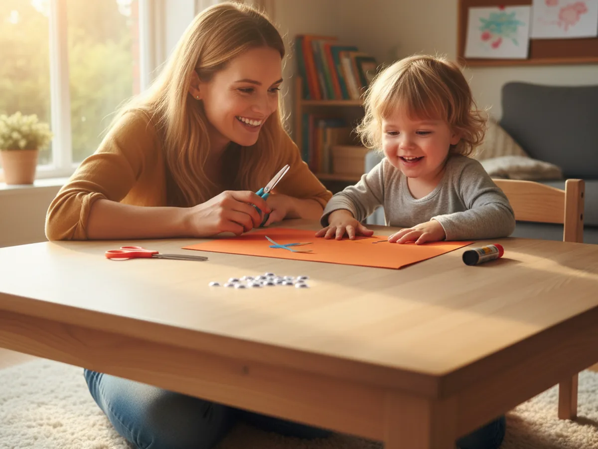
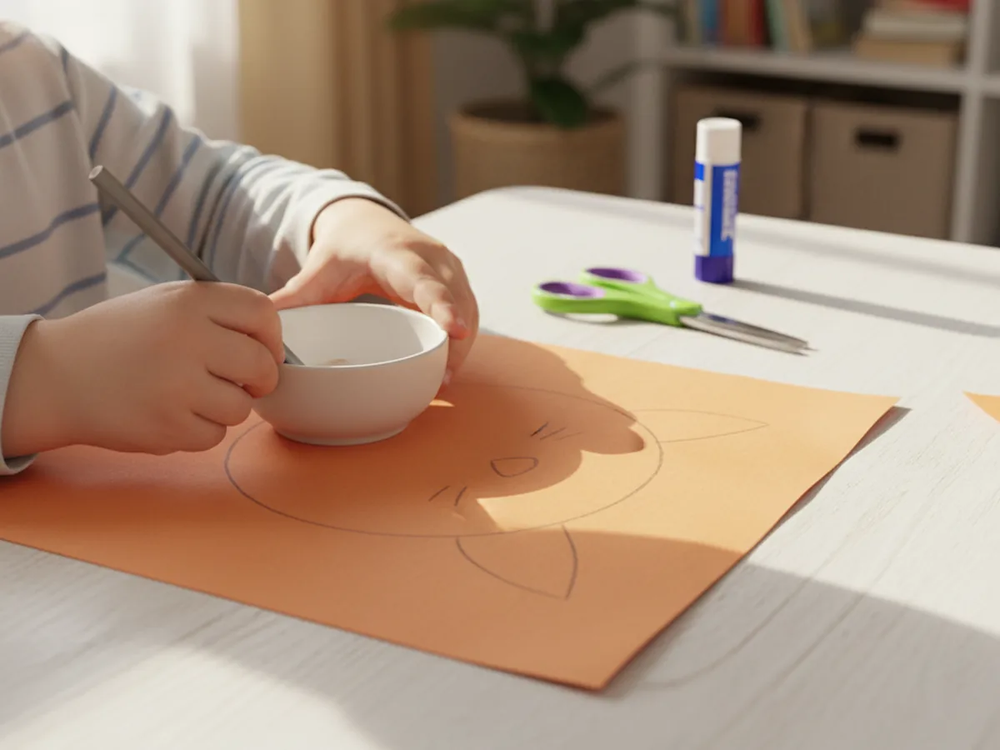
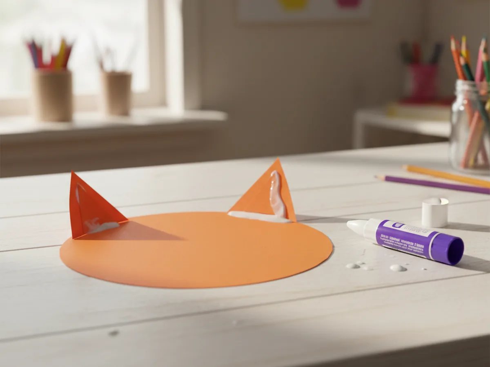
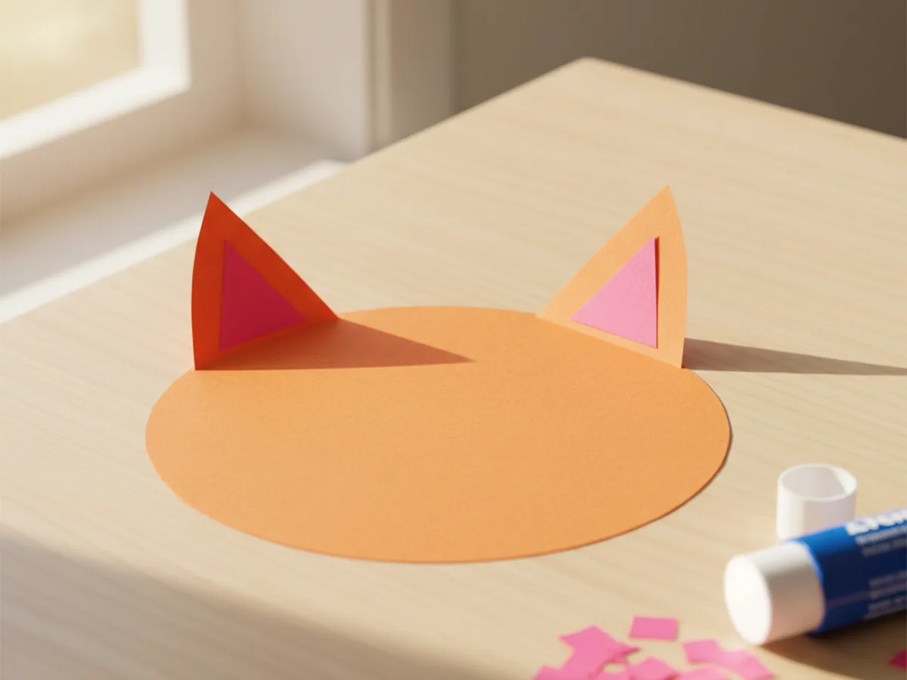
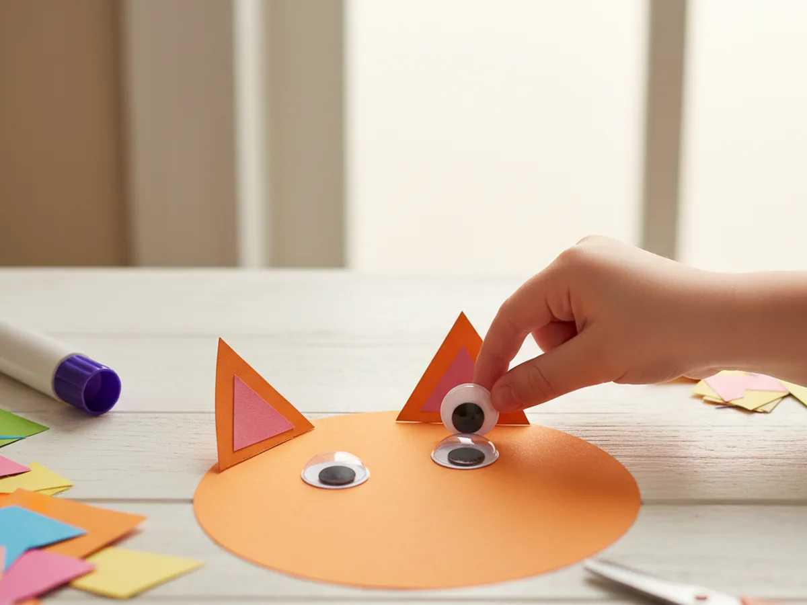
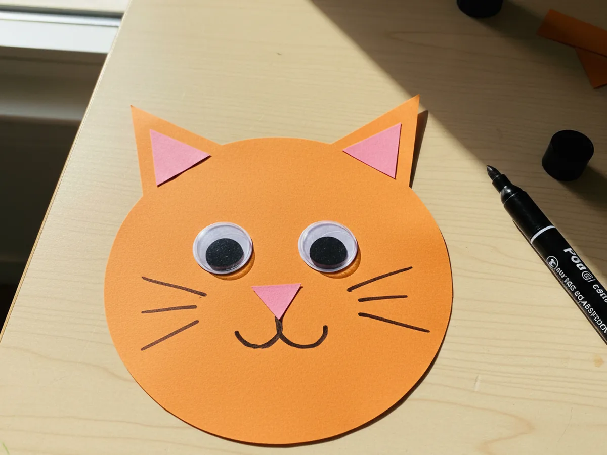
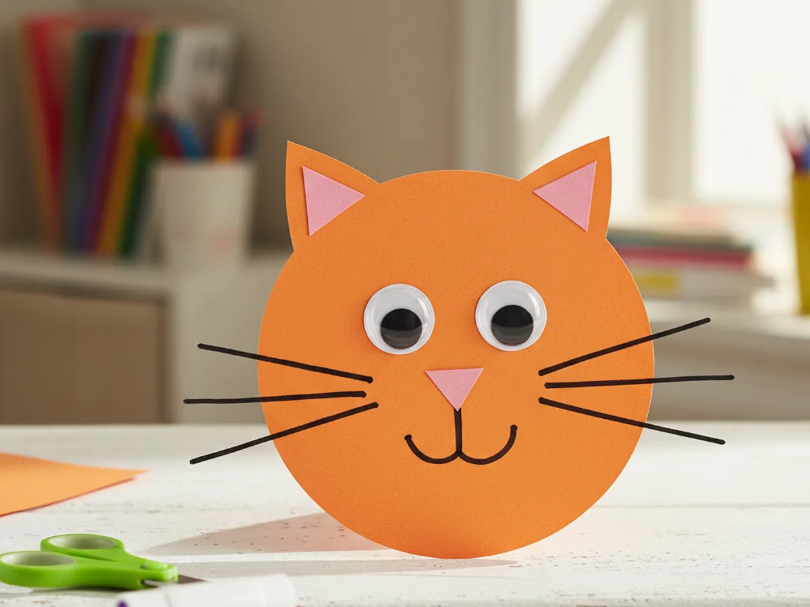

Cats are endlessly fascinating for little ones, and this cat paper craft is one of those simple activities that comes together in under 20 minutes and looks completely adorable once it is done. 🐱 All you need is some colored construction paper, a pair of child-safe scissors, a glue stick, and a couple of googly eyes. No paint, no mess, no special skills required. Whether your child is a cat lover or you are just looking for a quick and fun rainy-afternoon project, this easy cat paper craft is a perfect choice.
The best part is how quickly the cat starts to look like a cat. Once the ears go on and the googly eyes are pressed into place, kids feel that rush of pride that makes a craft truly memorable. Every little detail they add makes it more their own.
Why Kids Love This Craft
There is something uniquely magical about making a face. From the moment the ears are folded up and the eyes go on, this paper cat craft starts to look like a real character, and young children absolutely love that moment of transformation. It feels like they have created something alive right there at the kitchen table.
Cutting circles and triangles is wonderful for developing fine motor skills and hand control, two areas where young children benefit from lots of gentle practice. Choosing paper colors and deciding how long to draw the whiskers gives children real creative ownership over the result. And since every step of this cat paper craft for kids is accessible for ages 3 and up, there is nothing here to cause frustration or tears.
Kids also love that the finished cat face is something genuinely recognizable and display-worthy. Sticking it on the fridge, taping it to their bedroom door, or gifting it to a grandparent are all things they will want to do the moment it is finished. Every child deserves to feel proud of something they made with their own hands. 🐾

What You'll Need
Here is everything you need to make this simple cat paper craft at home. Lay it all out before you start so the activity flows smoothly from beginning to end.
- Crayola Construction Paper (240 sheets, assorted colors), the base of the whole craft; orange, grey, brown, or black all make great cats.
- Pink construction paper, for cutting the small inner ear triangles and the nose (included in most assorted packs).
- DECORA Self-Adhesive Googly Eyes (500 pieces, assorted sizes), two per cat, just peel and press.
- Elmer's Disappearing Purple Glue Sticks (30-pack), washable and easy for small hands to manage.
- Fiskars 5-Inch Pointed-Tip Scissors for Kids, great for ages 4 and up; use round-tip safety scissors for ages 3.
- A black marker, for drawing whiskers, the mouth, and any extra details.
- A round lid or bowl, optional, for tracing the head circle evenly.
Step-by-Step Instructions
This cat paper craft step by step is easy to follow, even on the very first try. Work through each step together and let your child take the lead wherever they feel confident.
Step 1: Trace and Cut the Cat's Head
Start by choosing the main color for your cat. Orange, grey, tan, or black are all wonderful choices and each one creates a completely different-looking cat. Take a full sheet of construction paper and use a round lid, a small bowl, or a cereal bowl to trace a large circle. The bigger the circle, the more space your child will have to add eyes, a nose, and whiskers. Once the circle is traced, have your child cut it out along the pencil line.
For children aged 3 to 4, trace the circle for them first and let them practice cutting along the line at their own pace. Slightly wobbly edges give the cat a charming, handmade look that is part of the appeal.

Step 2: Cut and Attach the Ears
From the same colored paper as the head, cut two triangles for the ears. They do not need to be perfectly identical. Roughly the size of a large strawberry works well, and slightly uneven edges make the craft feel authentically handmade. Apply a line of glue stick along the flat bottom edge of each triangle and press one firmly to each top corner of the head circle so the pointed tips stick up above the edge of the circle.
Hold each ear in place for a few seconds to let the glue catch. The moment the ears go on, the circle starts to unmistakably look like a cat, which is always an exciting moment for kids.

Step 3: Add the Inner Ear Details
Now pick up the pink construction paper and cut two smaller triangles, one for inside each ear. These inner ear shapes should be noticeably smaller than the outer ear triangles so they sit clearly inside the ear without overlapping the edge of the head circle. Apply a small dot of glue to the back of each pink triangle and press it firmly into the center of each ear.
This small detail makes a big visual difference. The contrast between the outer ear color and the soft pink inner ear gives the cat a realistic and polished look that children feel proud of.

Step 4: Press on the Googly Eyes
Peel the backing off two self-adhesive googly eyes and let your child press one onto each side of the upper half of the head circle. They should be roughly centered and about two finger-widths apart, sitting at about eye level on the face. The googly eyes are always the highlight of this cat paper craft. The moment they go on, the cat looks alive and has a real expression, and kids love nothing more than that instant transformation. 😍
Larger googly eyes tend to look especially cute and funny on a cat face. If your child wants to use mismatched sizes, that just adds to the charm.

Step 5: Add the Nose and Mouth
From the pink paper, cut a small triangle for the nose. It does not need to be large, roughly the size of a fingertip is ideal. Apply a tiny dot of glue to the back and press it onto the center of the face, just below the googly eyes. Once the nose is in place, use the black marker to draw a small letter Y shape directly below the nose tip. This creates the classic cat mouth look instantly. Then add two small curved lines above the corners of the mouth to suggest chubby little cheeks.

Step 6: Draw the Whiskers
This is the final step, and it is the one that truly brings the whole face together. Using the black marker, draw three long lines fanning outward from each side of the nose, so the cat has three whiskers on the left and three on the right. Encourage your child to make the lines nice and long so they extend well past the edges of the face. Long, confident whiskers look wonderful.
Once the whiskers are done, your child can add any extra details they want: small dots at the base of each whisker, a little bow on one ear, freckles, stripes, or anything else their imagination suggests. There is no wrong answer here, and the personal touches are what make each cat completely one of a kind.

Variations to Try
Halloween Black Cat: Use black construction paper for the head and ears, and glue the finished face onto a large orange circle for a full moon background. Add a green or yellow moon and a small crescent shape for added atmosphere. It makes a wonderfully simple Halloween decoration that even a toddler can help put together.
Striped Tabby Cat: Once the face is finished, use an orange or brown marker to draw short parallel stripes across the forehead and cheeks to turn your cat paper craft into a tabby. This works beautifully on a tan or light orange base and gives older children a chance to add a more detailed, realistic look.
Paper Plate Cat Face: Swap the construction paper circle for a small paper plate to make an even sturdier and larger cat face. Paper plates are especially good for children under 3 who may find cutting a large circle too tricky. The plate gives them a ready-made head shape to decorate, and the end result is just as adorable.
Final Thoughts
This cat paper craft is one of those projects that manages to be beginner-friendly enough for a 3-year-old and satisfying enough for a school-age child. It takes about 20 minutes from start to finish, uses only materials you likely already have at home, and creates almost zero mess beyond a few tiny paper scraps. Most importantly, it gives you and your little one a genuine shared moment of making something together and ending up with something cute to show for it. 🎨
If your child makes their own paper cat, I would love to see it. Share a photo on Pinterest and pin this article so other families can find it too. Happy crafting!
More Crafts You'll Love
If your little one enjoyed this cat paper craft, these other animal paper crafts are just as easy and just as fun: